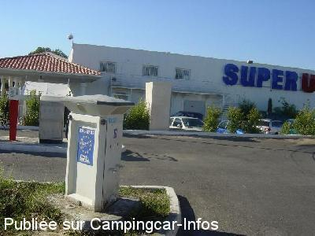
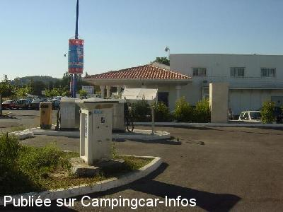

AS = Aire de services uniquement de :
PUYVERT
(N° 724)
Accès/adresse :
Voie communale Jas de Puyvert
Parking supermarché
84160 PUYVERT
Parking supermarché
84160 PUYVERT
Latitude : (Nord) 43.74694° Décimaux ou 43° 44′ 48′′
Longitude : (Est) 5.33707° Décimaux ou 5° 20′ 13′′
Tarif : Gratuit
Type de borne : EURO-RELAIS
Services :


Supermarché
Autres informations :
2 branchements électriques

Le 19/08/2005 par jeanschneiter

Le 19/08/2005 par jeanschneiter
de
pilote-us
le 30/01/2016 :
bonjour,
nous sommess areter ici , aire gratui aqua electric, mais bornage electric detruit dangereusement, aire camper service, bruyan, truck ,car,a toute heure, nous rester 2 hours seulemnt , persone aire de camper service neutre poubell camion, , service lave car coté
bonjour,
nous sommess areter ici , aire gratui aqua electric, mais bornage electric detruit dangereusement, aire camper service, bruyan, truck ,car,a toute heure, nous rester 2 hours seulemnt , persone aire de camper service neutre poubell camion, , service lave car coté
de
sybrub
le 16/07/2015 :
nuit du 3 au 4 juillet 2015 passée sur cette aire plutôt très bruyante mais interessante car possible d'y faire une lessive. Le lavomatic étant située juste à coté de l'aire. C'était le seul point de ravitaillement en eau le plus proche de nous à ce moment et c'est le lavomatic qui a fait que nous y avions passé la nuit car sur les aires de supermarché c'est bien souvent bruyant (c'était du moins le cas sur les 2 aires de supermarché que nous avons utilisées par le passé).
nuit du 3 au 4 juillet 2015 passée sur cette aire plutôt très bruyante mais interessante car possible d'y faire une lessive. Le lavomatic étant située juste à coté de l'aire. C'était le seul point de ravitaillement en eau le plus proche de nous à ce moment et c'est le lavomatic qui a fait que nous y avions passé la nuit car sur les aires de supermarché c'est bien souvent bruyant (c'était du moins le cas sur les 2 aires de supermarché que nous avons utilisées par le passé).
de
Rommat
le 30/04/2015 :
aire très petite et très bruyante ; lavage voitures sans cesse nuit et jour juste devant l'aire; bien pour faire ses courses au Super U
aire très petite et très bruyante ; lavage voitures sans cesse nuit et jour juste devant l'aire; bien pour faire ses courses au Super U
de
balibalo
le 15/12/2014 :
bjr par rapport aux photos la bornes est deplacer de l autre coté du service technique, je comfirme tout gratuit avons fait les services plus une petite recharge edf, acheter du gaz , les courses, une laverie du linge , et meme ma femme a fait son repassage voila une facon de recompensé les service gratuit, par contre y rester une nuit
bjr par rapport aux photos la bornes est deplacer de l autre coté du service technique, je comfirme tout gratuit avons fait les services plus une petite recharge edf, acheter du gaz , les courses, une laverie du linge , et meme ma femme a fait son repassage voila une facon de recompensé les service gratuit, par contre y rester une nuit
de
biker27
le 20/09/2012 :
aire de service gratuit 2 bornes éléctrique é non 4 ji suis rester un dimanche il yavait moin de monde mé en semaine ca doit etre bruyant é jai oublier lavomatique juste a coter.
aire de service gratuit 2 bornes éléctrique é non 4 ji suis rester un dimanche il yavait moin de monde mé en semaine ca doit etre bruyant é jai oublier lavomatique juste a coter.
de
patrick
le 08/07/2011 :
Bonjour
Aire de service trop petite bruyante station lavage a coter voiture
Venant sans cesse au lavage jour et nuit ,camion livraison jour et nuit également trape eau use bloquer 2. Prise electricite et non 4
Que je n ai pas réussi a faire fonctionner.
Bonjour
Aire de service trop petite bruyante station lavage a coter voiture
Venant sans cesse au lavage jour et nuit ,camion livraison jour et nuit également trape eau use bloquer 2. Prise electricite et non 4
Que je n ai pas réussi a faire fonctionner.
de
alain
le 29/10/2007 :
L'aire est située derrière le centre de contrôle technique auto. Elle est totalement gratuite et comprend 4 bornes électriques.
Attention, dès 4 heures du matin vous êtes réveillés par de gros camions qui viennent livrer le Super U. Compte tenu des services et du tarif gratuit c'est le prix à payer.
L'aire est située derrière le centre de contrôle technique auto. Elle est totalement gratuite et comprend 4 bornes électriques.
Attention, dès 4 heures du matin vous êtes réveillés par de gros camions qui viennent livrer le Super U. Compte tenu des services et du tarif gratuit c'est le prix à payer.
de
serge tarisien
le 03/12/2006 :
Aire de services, entièrement gratuite au supermarche U, derrière la station-service. Il y a même 4/5 places pour y passer la nuit.
Aire de services, entièrement gratuite au supermarche U, derrière la station-service. Il y a même 4/5 places pour y passer la nuit.